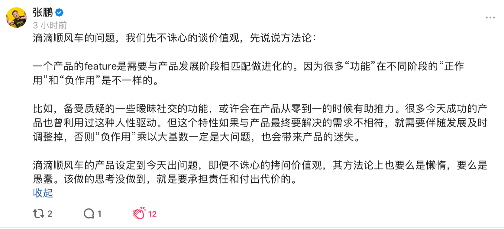

Color Red
青年在选择职业时的考虑
一篇高中生作文，充满激情（胃口或野心极大的激情）和思考（有点拽不住的冲动，慌张地冲到结论上去了），不仔细读就感觉是笼统的废话，仔细读也颇有受益。曾经拿来读了几遍做定心丸用，估计以后还会服用。特地不摘“高尚的人们将洒下热泪”，因为必须拿17岁的心智和目光来看这篇文章啊，那就不是野心勃勃，而是深思熟虑了。
原文摘录：
- 认真地权衡这种选择，无疑是开始走上生活道路而又不愿在最重要的事情上听天由命的青年的首要责任。
- 我们应当认真考虑：我们对所选择的职业是不是真的怀有热情？发自我们内心的声音是不是同意选择这种职业？我们的热情是不是一种迷误？我们认为是神的召唤的东西是不是一种自我欺骗？不过，如果不对热情的来源本身加以探究，我们又怎么能认清这一切呢？
- 不仅虚荣心能够引起对某种职业的突然的热情，而且我们也许会用自己的幻想把这种职业美化，把它美化成生活所能提供的至高无上的东西。我们没有仔细分析它，没有衡量它的全部分量，即它加在我们肩上的重大责任；我们只是从远处观察它，而从远处观察是靠不住的。
- 如果我们经过冷静的考察，认清了所选择的职业的全部分量，了解它的困难以后，仍然对它充满热情，仍然爱它，觉得自己适合于它，那时我们就可以选择它，那时我们既不会受热情的欺骗，也不会仓促从事。
- 能给人以尊严的只有这样的职业，在从事这种职业时我们不是作为奴隶般的工具，而是在自己的领域内独立地进行创造。
50年前，一群年轻人走上了街头……
1968年。在我浅薄的知识里，逆着时间轴往上捋，总会撞到几个时间结节，有时候错误地把很多事情都堆到那个时间点上，造成一种巨大的重要的假象，陷入迷思。
缺了一篇五四的内容，假装它存在
–
青年节·马克思墓地寻找指南
产品
产品设计方案需要随着业务的发展演进

这世界
流浪中的阿富汗国宝，正在中国避难
原文摘录：
- 1996年9月底，塔利班接管了这片地区，但在两周前，有500个板条箱装着最后3000多件珍贵的文物运送到了安全地带。
- 在2000年前后，只剩20人还能为文物事业服务。并且他们的工资低得可怜，馆长每月收入甚至不足36块人民币，白天还需靠卖菜或给人开车维生。可就算如此，他们也甘愿冒着生命危险为这些文物服务到底。
- 为保护这些人类遗产，其中231件珍宝自2004年踏上了流浪之旅……并在2017年抵达中国。原本只在中国呆上一年时间，但因为美方博物馆拒绝了这些展品，所以将在中国停留更长时间。最近将在郑州博物馆开始展览，之后是深圳，以及在2020年还有可能在天津开幕。
- 2003年6月，这所博物馆重新开幕时，馆长激动地致辞道：“文化在国家就在”。
今天，全球媒体都在等待一位104岁老人的死亡
原文摘录：
- 在雷蒙的亲朋好友看来，人应该“爱生命”，而不应该“惩罚生命”。
那么，该如何理解“有尊严地结束生命”？
关键词：虐老，老龄化，死亡的权利，生命的选择权。
赚钱的“数学家”们
靠赌马赚了10亿美金，这个人最近终于浮出了水面！
原文摘录：
- 终于，他发现了一个参数，对于比赛的结果影响很大！ 那就是这匹赛马这次比赛和上次比赛相距的时间。换句话说，也就是这匹赛马在上次比赛之后得以休息的时间。
- 下一个赛季，他发现他一直错过了一个最重要的信息： 赛马会公布的每匹马的赔率。
- 他已经组好了一个团队，有专门打电话电话下注的人，也有专门盯着赔率变化的人，最猛的时候，他电脑模型里的赔率一分钟就要保持更新8次。
- Benter表示，能不能用电子手段替代电话下注？ 我们下注量太大，电话下注实在有点慢啊。赛马会同意了，还给Benter安装了一台专门的电子下注终端。
- 赛马会都会邀请中了3T大奖的人到电视镜头之下领奖， 然而这样，他们就暴露了。虽然他们做的这些并不违反当时的法律，他们赢的钱只不过是别的彩民输掉的钱。 但是，如果所有的彩民发现，这个赢了他们口袋里1亿多的人，居然是一个美国的算法团队时，他们又会怎么想？？ 最终，他决定不去领奖。
- 随后，他们的下注终端被赛马会取缔， 理由是为了保障彩民正当的利益。 2001年下半年，赛马会出台政策，不但禁止电话下注，还禁止在家从网上网给赛马下注。
赌马和彩票还是不同，赌马是马，真实的物体和事件，彩票理想上是随机事件。赌马背后可能的确有模型可建。“休息时间”这个参数的发现，十分典型的被忽略的相关因素。赔率可以当成某种“专家经验”，它既反应马的能力，又影响最后的收益。电子下注终端，这个在2001年也不能算是超前，但是作为独家专线，用计算和一般参与者对比，的确十分不公平。赛马会修改规则，十分应当，博彩业制造暴富和浮躁，但是行业本身需要规则约束，不然就是庄家收割机而已，也是玩不下去的。
进了赌场黑名单的数学家们，已经快把这种赌法玩坏了
原文摘录：
- 之所以将 21 点说成是赌场最容易赢钱的游戏，是因为在掌握最佳策略的情况下，玩家胜率高达 49% 。而最佳策略也不难掌握，其实就是“算概率”。
文章虽然没有直接告诉我们，如何获得这样的学习资源，但是给出了方向。